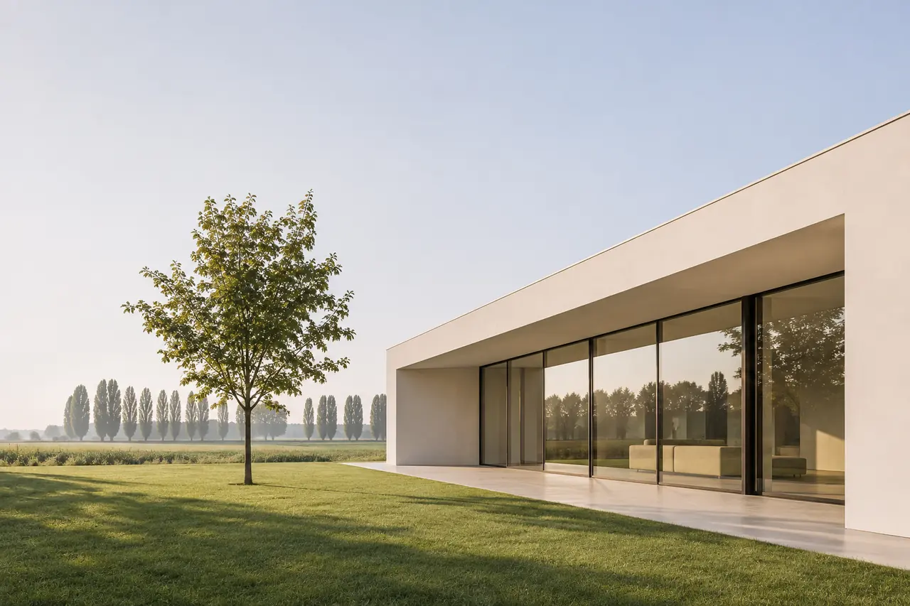
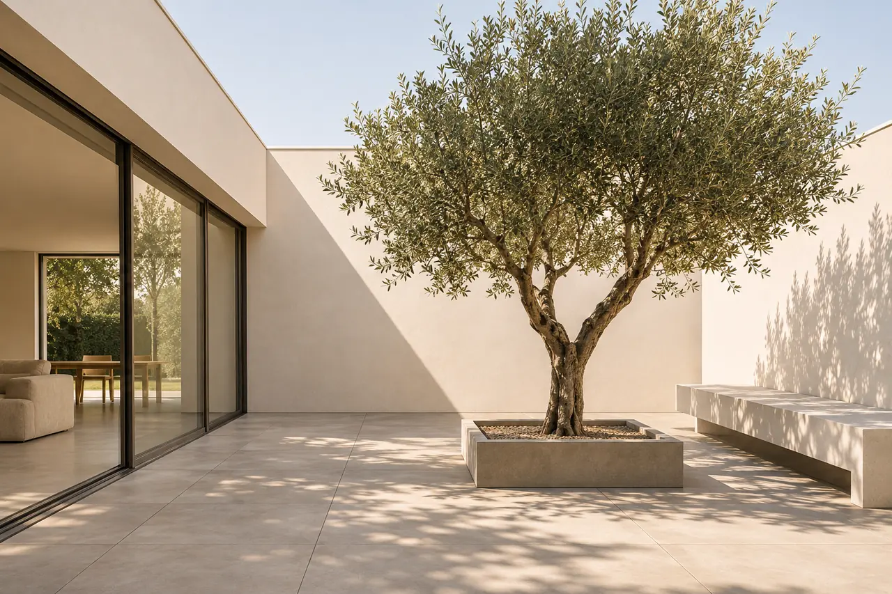
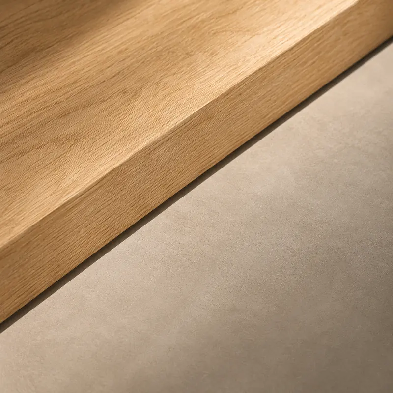

Nuove costruzioni a Mantova
Progetto la tua casa da zero: ville moderne, case unifamiliari e bifamiliari pensate per il luogo in cui sorgono e per chi le abiterà.
Primo incontro conoscitivo gratuito e senza impegno.
Una casa nuova, pensata per durare
Costruire una casa nuova è l’occasione per avere esattamente gli spazi che ti servono, con consumi bassi e materiali di qualità. Parto dal terreno: orientamento, vista, confini, regole urbanistiche del Comune. Da lì nasce un progetto che sfrutta la luce naturale e si inserisce con equilibrio nel paesaggio della pianura mantovana.
La mia è un’architettura residenziale contemporanea attenta alla bioedilizia e all’efficienza energetica: volumi semplici, buon isolamento, materiali naturali dove hanno senso.

Cosa progetto
Ville moderne e case unifamiliari
Dallo studio dei volumi ai dettagli costruttivi, con rendering fotorealistici per vedere la casa prima di costruirla.
Case bifamiliari
Due unità indipendenti sullo stesso lotto, per famiglie che vogliono vivere vicine o per un investimento, con spazi privati ben separati.
Studio di fattibilità del lotto
Prima di acquistare un terreno verifico con te cosa ci si può costruire, quanto e con quali vincoli.
Come imposto il progetto
- Progetto bioclimatico
- Orientamento, aperture e ombreggiamenti studiati per ridurre i consumi.
- Materiali e bioedilizia
- Legno, laterizio, intonaci a calce e isolanti naturali, dove hanno senso.
- Rendering 3D
- Vedi la casa e i suoi interni prima che inizi il cantiere.
- Un solo riferimento
- Progetto, pratiche, direzione lavori e coordinamento delle imprese.

Dal terreno alla consegna
Incontro e analisi del lotto
Esigenze, budget e verifica delle regole urbanistiche.
Progetto preliminare
Volumi, distribuzione e prime immagini 3D.
Progetto definitivo e permessi
Disegni completi e richiesta del permesso di costruire.
Progetto esecutivo e imprese
Dettagli costruttivi, capitolato e confronto dei preventivi.
Direzione lavori
Seguo il cantiere fino alla consegna delle chiavi.
Costi e tempi indicativi
Per una nuova costruzione l’onorario dipende da dimensioni, complessità e servizi richiesti, per questo non ti do una percentuale generica. Dopo il primo incontro e l’analisi del lotto ti preparo un preventivo scritto e dettagliato.
Le cifre sono indicative e servono a orientarti: ogni progetto ha il suo preventivo.
- Progetto e permesso di costruire
- alcuni mesi, secondo il Comune
- Costruzione
- indicativamente uno o due anni, secondo dimensioni e sistema costruttivo
Domande frequenti
Quanto costa progettare una casa nuova?
Dipende da dimensioni, complessità e servizi richiesti: solo progetto, oppure anche pratiche, direzione lavori e interni. Dopo il primo incontro ti preparo un preventivo scritto e dettagliato.
Quanto tempo serve per costruire una casa nuova?
Il progetto e il permesso di costruire richiedono di solito alcuni mesi. La costruzione dura in genere da uno a due anni, secondo dimensioni, sistema costruttivo e organizzazione del cantiere.
Mi aiuti a scegliere il terreno?
Sì. Prima dell’acquisto posso verificare cosa prevede il piano urbanistico del Comune, quanto si può costruire e se ci sono vincoli o costi nascosti.
Una casa efficiente costa molto di più?
Se l’efficienza è prevista dall’inizio, molto meno di quanto si pensi. Orientamento, forma compatta, isolamento continuo e impianti dimensionati correttamente costano meno che correggere dopo.
Progetti anche gli interni della casa nuova?
Sì. Progettare insieme architettura e interni evita incongruenze e permette di definire impianti, luci e arredi su misura fin dall’inizio. Scopri l’interior design.
Parliamo della tua casa nuova
Raccontami dove vorresti costruire e che casa immagini. Ti ricontatto per un primo incontro.